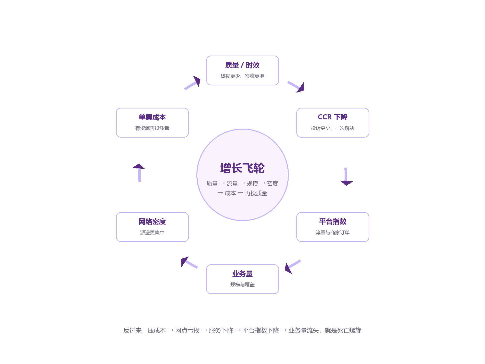

7.1 一条主线：利润 = 业务量 × 单票利润
所有指标最终都可以挂到这条主线上：
利润 = 业务量 × 单票利润
单票利润 = 单票收入 − 单票运能成本 − 单票操作成本 − 单票网络成本 − 单票质量/其他
把每个因子再拆开：
| 因子 | 一级驱动 | 二级驱动 |
|---|---|---|
| 业务量 | 价格、服务、覆盖、销售 | 单票收入、平台指数、L4/L5 网点、直客 |
| 单票收入 | 价格、重量、距离、产品 | 政策结构、货型结构、目的区域、圆准达/国际件 |
| 单票运能成本 | 装载率、里程、单边、车型 | 吨位/方量装载率、路由、票均里程、回程货源 |
| 单票操作成本 | 单次成本 × 操作次数 | 人均效能、自动化、场地、建包/中转 |
| 单票网络成本 | 派费、直送、终端、密度 | 网点分层、驿站/柜、线上发薪、共配 |
| 质量/其他 | 遗失、破损、时效、投诉 | 建包、扫描、分拨、派送、理赔 |
这张表就是“经营地图”的细化版。任何一个结果指标变化，都能沿着这张表往下追。
7.2 量-价-本-利：降价换量什么时候划算
基本公式。
单票贡献毛利 = 单票收入 − 单票变动成本
利润 = 业务量 × 单票贡献毛利 − 固定成本
降价会降低单票贡献毛利，但可能带来业务量增长、摊薄固定成本。是否划算，取决于增量是否足够大。
临界增量公式。 假设降价 Δp，原单票贡献毛利 m，则保持总贡献毛利不变的业务量增幅为：
ΔV / V = Δp ÷ (m − Δp)
例子：
| 原单票贡献毛利 | 降价幅度 | 需要的业务量增幅 |
|---|---|---|
| 0.50 元 | 0.05 元 | 11.1% |
| 0.50 元 | 0.10 元 | 25.0% |
| 0.40 元 | 0.05 元 | 14.3% |
| 0.30 元 | 0.05 元 | 20.0% |
结论：单票贡献毛利越薄，降价换量的门槛越高。 当单票贡献毛利只有 0.30 元时，降价 5 分钱需要 20% 的增量才能保本；如果市场只能给 10% 的增量，降价就是净亏损。
降价换量的三种结果。
- 良性：增量足够大，固定成本摊薄，单票利润虽降但总利润升；同时网络密度提升、装载率提升。
- 中性：增量刚好保本，总利润不变，但网络更忙、风险更高。
- 恶性：增量不足，总利润下降；为了抢量继续降价，陷入价格战。
除了“量”，还要看“质”。 降价带来的增量，如果是：
- 轻泡货 → 装载率不升反降；
- 远端货 → 运能成本上升；
- 低服务要求客户 → 可能还好；
- 高赔付/高退货客户 → 质量成本上升。
那么，临界增量还要上调。
7.3 货型-装载-运能：轻泡货的连锁反应
一条典型的连锁反应。
轻小件占比 ↑ → 票均重量 ↓ → 单票收入 ↓ → 方量装载率 ↑、吨位装载率 ↓ → 亏吨 → 单票运能成本 ↑ → 单票利润 ↓
这条链的关键，是重量与体积的错配。
例子。 某线路原来票均 1.5kg，吨位装载率 90%，方量装载率 80%，单票运能成本 0.55 元。现在轻泡货占比上升，票均降到 1.1kg，方量装载率 95%，吨位装载率 70%。
- 同样一趟车，票数可能多了，但总重量下降；
- 油费、路桥、司机、折旧不变；
- 单票分摊的固定成本上升；
- 如果单票收入也下降，利润被“双杀”。
怎么破。
- 重泡搭配：把重货和轻泡货混装，提升吨位利用率。
- 车型匹配：轻泡货多用大容积车，重货多用大载重车。
- 路由合并：货量不足的线路合并班次，提高装载率。
- 价格结构：对轻泡货按体积重量计费，或加收抛货附加费。
- 包装优化：减少过度包装，降低体积。
- 产品分层：轻小件走经济产品，重货走大件产品，不要用同一张价格表。
反向连锁。 如果重货占比上升：
票均重量 ↑ → 单票收入 ↑ → 吨位装载率 ↑、方量装载率 ↓ → 亏方 → 单票运能成本 ↑ → 破损/投诉 ↑
所以，货型没有“绝对好坏”，只有“是否与价格、车型、路由匹配”。
7.4 时效-质量-平台-业务量：增长飞轮
正循环（飞轮）。

时效/质量 ↑ → CCR ↓ → 平台指数 ↑ → 平台流量/商家订单 ↑ → 业务量 ↑ → 网络密度 ↑ → 单票成本 ↓ → 有资源继续投入质量 ↑
这是一个“越做越好”的循环。它的起点通常不是业务量，而是质量：先把时效、破损、投诉做好，平台才给流量，业务量才上来，密度才提升，成本才下降。
负循环（死亡螺旋）。
派费/成本压得过低 → 网点亏损 → 快递员流失 → 派送延误/虚假签收 → CCR ↑ → 平台指数 ↓ → 业务量 ↓ → 密度 ↓ → 单票成本 ↑ → 更压成本 → 网点更亏
这个循环一旦启动，很难靠“再压一点成本”解决。因为成本已经压到网点/快递员的生存线，继续压只会加速服务崩塌。
飞轮的两个“加速器”。
- 平台指数：外部流量分配，放大质量优势。
- 网络密度：业务量越大，派送密度越高，单票网络成本越低。
飞轮的两个“刹车”。
- 价格战：降价抢量，短期飞轮转快，长期利润变薄，投入能力下降。
- 质量事故：一次大规模遗失/破损/虚假签收，可能让平台指数骤降，飞轮反转。
7.5 派费-网点-质量：成本转移的陷阱
表面逻辑。
派费 ↓ → 单票网络成本 ↓ → 利润 ↑
真实逻辑。
派费 ↓ → 网点收入 ↓ → 网点毛利 ↓ → 快递员收入 ↓ → 服务/时效 ↓ → CCR ↑ → 平台指数 ↓ → 业务量 ↓ → 网络密度 ↓ → 单票成本 ↑
为什么“成本转移”看起来像降本。 因为总部的网络成本下降了，但网点的成本/亏损上升了。如果只看总部报表，会以为降本成功；如果看全网（总部 + 网点），成本可能没降，甚至上升。
一个算例。 某省区日均 120 万票，派费下调 0.05 元/票：
- 总部网络成本每月下降：0.05 × 3,600 万票 = 180 万元；
- 如果 18 个负毛利网点因此亏损扩大，平均每月多亏 10 万元，合计 180 万元；
- 网点服务下降，CCR 上升，平台指数下降，业务量流失 2%，每月少做 72 万票，按单票利润 0.376 元算，损失 27 万元；
- 再加上赔付/考核增加，实际“降本”可能是负的。
判断派费是否合理。 不要只看派费绝对值，要看：
- 网点毛利率、负毛利网点数；
- 快递员流失率、人均派件量；
- CCR、虚假签收率、时效；
- 网点质量得分、高风险网点数；
- 业务量稳定性、共配比例。
派费改革的方向。
- 从“一刀切”转向“按区域/货型/服务难度差异化”；
- 从“压派费”转向“提密度、降成本、给网点更多收入来源”；
- 从“罚款”转向“质量奖励”；
- 从“总部独赢”转向“全网共赢”。
7.6 操作-质量-赔付：质量成本的冰山
一条链。
错分/混错建包/漏扫描 ↑ → 遗失/破损/超时 ↑ → CCR ↑ → 考核/赔付 ↑ → 利润 ↓
质量成本包括。
- 直接赔付：客户赔偿、保险、仲裁；
- 考核罚款：平台、省区、总部对网点的考核；
- 返工成本：二次分拣、二次派送、退回；
- 客服成本：工单、电话、理赔；
- 客户流失：最难量化，但最大。
冰山之下的部分。 报表上的“考核赔付”只是冰山一角。真正的质量成本还包括：
- 客户因为一次破损，把全年订单转走；
- 平台因为 CCR 高，降低流量；
- 网点因为罚款，负毛利、退网；
- 品牌因为虚假签收，失去直客信任。
质量投入的回报。
预防成本（培训、设备、包装、扫描）↑ → 故障成本（赔付、返工、流失）↓
预防成本通常远小于故障成本。比如，投入 10 万元做建包培训/扫描设备，可能减少 50 万元赔付和 100 万元客户流失。但预防成本是“当期费用”，故障成本是“以后发生”，所以容易被短期考核忽视。
质量成本的考核。 不要只考核“赔付金额下降”，要考核：
- 赔付率、CCR、遗失率、破损率；
- 重复赔付、升级投诉；
- 质量投入的完成率；
- 客户留存/复购。
7.7 组织-能力-质量：慢变量
管幅比、学历、培训、数字化，这些组织能力指标，不会立刻改变利润，但会通过质量/效率慢慢体现：
管幅合理 + 培训到位 + 数字化工具 → 网点问题发现早、执行到位 → 质量 ↑ → CCR ↓ → 平台指数 ↑ → 业务量 ↑
管幅比过宽的后果。
- 管理者只能“救火”，不能“防火”；
- 网点负毛利、违规、投诉发现滞后；
- 培训/辅导不到位，质量波动。
管幅比过窄的后果。
- 管理成本高，单票网络成本上升；
- 多头管理，网点无所适从；
- 决策慢，市场反应迟钝。
学历结构的后果。
- 高学历组长通常更擅长数据、系统、流程；
- 但学历不等于责任心、经验、领导力；
- 学历结构要和培训、绩效、流失率一起看。
慢变量的管理。 不能因为“这个月看不到效果”就不投入。要用季度/年度指标考核：
- 网点质量得分变化；
- 负毛利网点数；
- 快递员流失率；
- 培训覆盖率/考试合格率；
- 自动化覆盖率；
- 客户满意度/NPS。
7.8 领先指标与滞后指标
| 类型 | 指标 | 特点 | 用途 |
|---|---|---|---|
| 领先 | 装载率、超时库存、错分率、漏扫描率、重复进线、负毛利网点数、高风险网点数 | 变化快，先于结果 | 预警、干预 |
| 同步 | 业务量、单票收入、单票成本、CCR、时效达成率 | 与经营同步 | 监控、复盘 |
| 滞后 | 利润、平台指数、头部差距、网点质量得分、客户流失 | 变化慢，后于结果 | 考核、战略评估 |
预警链示例。
装载率 ↓ + 出港超时库存 ↑ → 未来 1–2 周时效 ↓ → CCR ↑ → 下月平台指数 ↓ → 业务量 ↓
如果等到平台指数下降再行动，已经晚了。管理要在“装载率/超时库存”这一层就介入。
领先指标的误用。 领先指标容易“刷”：装载率可以靠少发车刷高，超时库存可以靠提前扫描刷低，重复进线可以靠“不让客户再打”刷低。所以，领先指标要成对看，并配合结果指标验证。
7.9 相关不等于因果：三个陷阱
陷阱一：辛普森悖论。
整体 CCR 下降，但每个区域/客户类型的 CCR 都上升。为什么？因为低投诉的客户占比上升，把整体拉低了。解决：分群看，不要只看总体。
陷阱二：分母陷阱。
业务量增长 30%，投诉量增长 20%，CCR 下降；但绝对投诉量增加，客服压力、赔付成本上升。解决：同时看分子、分母、绝对值。
陷阱三：时间滞后。
本月压派费，网络成本下降，利润改善；三个月后网点亏损、服务下降、业务量流失。解决：看滞后效应，用季度/年度数据验证。
还有两个常见陷阱。
- 口径变化：业务量统计口径、收入确认口径、成本分摊口径变了，指标不可比。
- 选择偏差：只看到“活下来的网点”，没看到“退出的网点”；只看到“大客户”，没看到“长尾客户”。
7.10 本章小结
- 利润 = 业务量 × 单票利润；所有指标都可以挂到这条主线上。
- 降价换量有临界增量；单票贡献毛利越薄，门槛越高。
- 轻泡货会引发“收入降、装载降、成本升”的连锁反应。
- 质量驱动增长飞轮；压成本可能启动死亡螺旋。
- 派费是成本转移的典型；总部降本可能等于全网增亏。
- 质量成本是冰山；预防成本远小于故障成本。
- 组织能力是慢变量；领先指标要成对看。
- 相关不等于因果；警惕辛普森悖论、分母陷阱、时间滞后。
下一章，我们用一个完整的省区案例，把前面所有指标串起来。